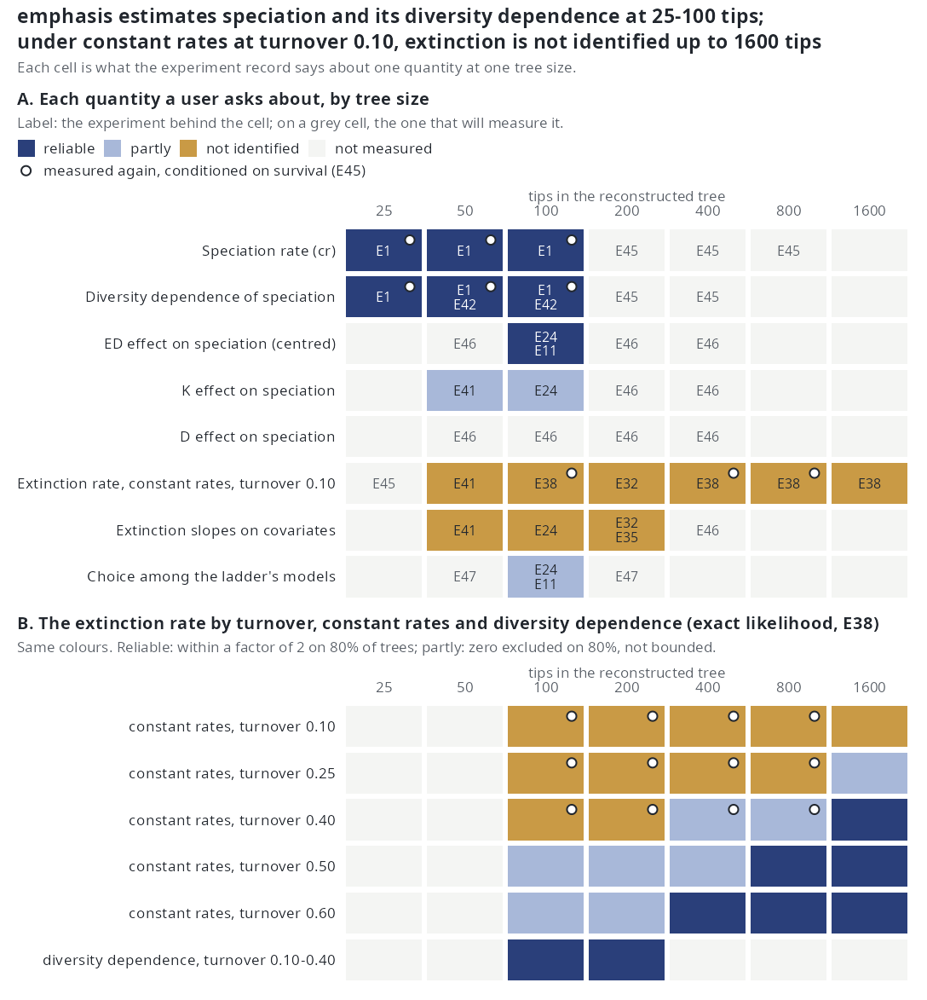

emphasis: diversification inference with endogenous drivers
emphasis is an R package for fitting birth-death models of species diversification to a dated phylogeny of the surviving species of a clade. The speciation and extinction rates may depend on the state of the diversification process itself: on how many lineages are alive, on how old each lineage is relative to its contemporaries, on how distinct it is, and on how many splits its ancestry carries. The lineages that went extinct, and the living ones that were not sampled, are not in the tree, so the likelihood of the observed tree is an integral over every hidden history consistent with it. The package evaluates that integral by data augmentation with importance sampling, maximises it by Monte Carlo EM, with or without conditioning on the survival of the clade, and chooses among covariates either by comparing fitted models or along one least-angle path over all of them.
This page states the model, the likelihood, the estimator and the routes to a model, with the equations as the code computes them. Worked examples with their output are on Usage; every exported function is documented on Reference; the measurements behind every number quoted here are on What is established, Estimability, Real phylogenies and the experiments, one page each; terms are defined in the Glossary.
1. The problem
A reconstructed phylogeny records the topology and branching times of the \(n\) species of a clade that are alive at the present and were sampled. Everything else the diversification process produced is missing: every lineage that went extinct, with its birth, its attachment to the tree and its death, and every living lineage that was not sampled. Under constant rates the missing part can be integrated out in closed form (Nee, May and Harvey 1994), and under diversity-dependent rates by a system of differential equations in the number of lineages alive (the DDD package). The models of this package go one step further: a lineage's rates may depend on its own position in the tree, read on the complete tree, hidden lineages included. A hidden lineage lowers the distinctiveness of its living relatives while it lives, a hidden split raises the ancestral-split count of its descendants and restarts its parent's pendant age, and no finite family of equations carries that state. The integral over the hidden part is evaluated by Monte Carlo.
Time \(t\) runs forward from the crown (\(t = 0\)) to the present (\(T\)). The clade starts with two lineages. The complete tree holds every lineage that arose; \(A(t)\) is the set of lineages alive on it at time \(t\) and \(N(t)\) their number. Lineage \(s\) speciates at rate \(\lambda_s(t)\) and goes extinct at rate \(\mu_s(t)\). A speciation replaces \(s\) by two lineages, one of which keeps the identity of \(s\); an extinction removes \(s\). Each lineage alive at \(T\) is sampled independently with a known probability \(\rho \in (0, 1]\). What remains after removing the extinct and unsampled lineages, together with every ancestor all of whose descendants are missing, is the reconstructed tree \(y\). The hidden part \(z\) is the difference.
2. The covariates
Four covariates are read on the complete tree at time \(t\). The first is clade-level and depends only on the branching times; the other three are lineage-level and depend on the topology, so the \(\mathrm{ED}\) and \(K\) models need a phylo object and refuse a bare vector of branching times; a \(D\) model fitted from a bare vector records every observed lineage as dating from the crown and reads \(D = 0\) at every observed event. Each covariate has a page on the hypothesis it encodes, what the sign of its coefficient means and what the experiments and real trees say: N, D, ED and K, with the four compared.
Let \(\tau_s(t)\) be the pendant start of lineage \(s\): the time of its birth or of its latest split, whichever is later. It restarts at every split of \(s\), observed or hidden. The pendant age \(E_s(t) = t - \tau_s(t)\) is the length of the lineage's current terminal edge. Summed over the living lineages the pendant ages give the pendant phylogenetic diversity \(P(t)\), with clade mean \(M(t)\):
\[ E_s(t) = t - \tau_s(t), \qquad P(t) = \sum_{s \in A(t)} E_s(t) = N(t)\,t - \sum_{s \in A(t)} \tau_s(t), \qquad M(t) = \frac{P(t)}{N(t)}. \tag{1} \]
| Symbol | Name | Definition at time \(t\) | What it reads |
|---|---|---|---|
| \(N(t)\) | diversity | the number of lineages alive on the complete tree | the branching times, hidden lineages counted |
| \(D_s(t)\) | centred pendant age | \(E_s(t) - M(t)\); sums to zero over the lineages alive | whether \(s\) is older or younger than its contemporaries |
| \(\mathrm{ED}_s(t)\) | evolutionary distinctiveness | the fair proportion \(\sum_{b \succeq s} \ell_b(t)/n_b(t)\) over the branches from the crown to \(s\); sums over the clade to Faith's phylogenetic diversity \(\mathrm{PD}(t)\) | the whole ancestry of \(s\), each branch weighted by how little of it is shared |
| \(\mathrm{ED}^c_s(t)\) | centred distinctiveness | \(\mathrm{ED}_s(t) - \mathrm{PD}(t)/N(t)\); sums to zero | the within-clade contrast of distinctiveness alone |
| \(K_s(t)\) | ancestral splits | the number of speciation events on the path from the crown to \(s\), hidden splits counted | whether a speciation-rich ancestry speciates more, or less |
\(D\), the centred pendant age. \(D_s(t) = E_s(t) - M(t)\), so \(\sum_{s \in A(t)} D_s(t) = 0\) at every instant: \(D\) carries no clade-level signal and is orthogonal to \(N\). Between two consecutive events every pendant age and their mean grow at unit rate, so on a segment \(D_s = \bar\tau - \tau_s\), the mean pendant start of the alive lineages minus the lineage's own, is constant. The simulator holds that value between events, and since commit 4e0b9dd the likelihood reads the same value on the whole segment: the compensator integrates the rates at the \(D_s\) the segment started with, and the event that ends the segment is charged with the same \(D_s\). The clade mean \(M\) is used only to centre \(D\) and is not a user covariate. What \(\beta_D\) tests, in biological terms, is set out on the biological meaning of D.
\(\mathrm{ED}\), fair-proportion distinctiveness. \(b \succeq s\) runs over the branches on the path from the crown to \(s\), \(\ell_b(t)\) is the length of branch \(b\) up to \(t\) and \(n_b(t)\) the number of lineages alive at \(t\) that descend from it (Isaac et al. 2007). The last branch on the path has one alive descendant, \(s\) itself, so it contributes the pendant age \(E_s(t)\); the sum of \(\mathrm{ED}_s\) over the alive lineages is Faith's \(\mathrm{PD}(t)\), so the clade mean of \(\mathrm{ED}\) is \(\mathrm{PD}/N\), a clade-level quantity. Within a segment every ancestral share is constant and only the pendant branch grows: \(\mathrm{ED}_s(u) = c_s + (u - \tau_s)\), with \(c_s\) the constant one pass over the tree returns (inst/include/ed_covariate.hpp, shared by the simulator and the likelihood). The centred covariate \(\mathrm{ED}^c_s = \mathrm{ED}_s - \mathrm{PD}/N\) removes the clade mean, which the \(N\) term already tracks; because every \(\mathrm{ED}_s\) grows at the same unit rate, \(\mathrm{ED}^c_s\) is constant on a segment. What \(\beta_{ED}\) tests is set out on the biological meaning of ED.
\(K\), ancestral splits. At a split both daughters carry one more than the parent. On the segment \((t_0, t_1]\) a lineage's \(K\) is its value at \(t_0\), and the event at \(t_1\) is charged with that value: a split at \(t_1\) is not yet on the path. \(K\) is the observable trace of what inherited-rate models carry as a latent variable, and it is the one candidate covariate the basis \(\{N, D, \mathrm{ED}\}\) does not span (rank correlation at most 0.29 in magnitude with each, over 6,433 lineages on 30 complete diversity-dependent clades). What \(\beta_K\) tests, and why on real trees it is no longer separate from \(\mathrm{ED}\), is set out on the biological meaning of K.
An unsampled lineage alive at \(T\) counts in \(N\) and in the covariates of its relatives, so below \(\rho = 1\) a lineage-level fit reads covariates that are partly drawn. lineage_table() exposes the numbers the likelihood is built on: one row per lineage alive on each segment, with the segment's bounds t0 and t1, N, the clade mean M at the segment's end, the lineage's pendant start ts (so that D = (t1 - ts) - M), its ed0 at the segment's start, its K, and event (1 when the lineage's own speciation ends the segment, 2 when its extinction does, 0 otherwise). Rebuilding the log-likelihood from this table reproduces the compiled value to a relative tolerance of \(10^{-8}\) on augmented trees, and the same table is the design matrix of the selection path of Section 9.
3. The models
Each rate is a link \(g\) of a linear predictor in the covariates:
\[ \begin{aligned} \lambda_s(t) &= g\big(\beta_0 + \beta_N N(t) + \beta_D D_s(t) + \beta_{ED}\,\mathrm{ED}_s(t) + \beta_K K_s(t)\big),\\ \mu_s(t) &= g\big(\gamma_0 + \gamma_N N(t) + \gamma_D D_s(t) + \gamma_{ED}\,\mathrm{ED}_s(t) + \gamma_K K_s(t)\big). \end{aligned} \tag{2} \]
A model leaves some coefficients free and fixes the rest at zero. Every covariate a model uses enters both rates, so each adds two free parameters to the two intercepts; \(\theta = (\beta, \gamma)\) collects the free ones. In edc and nedc the \(\mathrm{ED}_s\) of (2) is replaced by \(\mathrm{ED}^c_s\). The ten named models:
| Model | Formula | Covariates (both rates) | Free parameters | Parameter vector pars |
Default proposal |
|---|---|---|---|---|---|
cr |
~ 1 |
none | 2 | \((\beta_0, \gamma_0)\) | surrogate |
dd |
~ N |
\(N\) | 4 | \((\beta_0, \beta_N, \gamma_0, \gamma_N)\) | surrogate |
d |
~ D |
\(D\) | 4 | \((\beta_0, \beta_D, \gamma_0, \gamma_D)\) | thinning |
nd |
~ N + D |
\(N\), \(D\) | 6 | \((\beta_0, \beta_N, \beta_D, \gamma_0, \gamma_N, \gamma_D)\) | thinning |
ed |
~ ED |
\(\mathrm{ED}\) | 4 | \((\beta_0, \beta_{ED}, \gamma_0, \gamma_{ED})\) | surrogate |
edc |
~ EDc |
\(\mathrm{ED}^c\) | 4 | \((\beta_0, \beta_{ED}, \gamma_0, \gamma_{ED})\) | surrogate |
ned |
~ N + ED |
\(N\), \(\mathrm{ED}\) | 6 | \((\beta_0, \beta_N, \beta_{ED}, \gamma_0, \gamma_N, \gamma_{ED})\) | surrogate |
nedc |
~ N + EDc |
\(N\), \(\mathrm{ED}^c\) | 6 | \((\beta_0, \beta_N, \beta_{ED}, \gamma_0, \gamma_N, \gamma_{ED})\) | surrogate |
k |
~ K |
\(K\) | 4 | \((\beta_0, \beta_K, \gamma_0, \gamma_K)\) | thinning |
nk |
~ N + K |
\(N\), \(K\) | 6 | \((\beta_0, \beta_N, \beta_K, \gamma_0, \gamma_N, \gamma_K)\) | thinning |
A model is named by its shortcut or by its formula (model = "ned" or model = ~ N + ED); "ep" is a legacy alias of "d". The parameter vector lists the \(\beta\) coefficients of the active covariates in the order \(N\), \(D\), \(\mathrm{ED}\), \(K\), then the \(\gamma\) coefficients in the same order, so its length is \(2 + 2 \times\) (number of covariates). cr and dd are the clade-level models and the other eight the lineage-level models. Two models have an exact likelihood against which the estimator is checked: cr through DDD::bd_ML (Nee et al. 1994), and dd on the linear link with constant extinction through DDD::dd_ML (Etienne et al. 2012), whose speciation rate \(\max\{0, \lambda_0 - (\lambda_0 - \mu_0)N/\text{capacity}\}\) is the linear-link dd with \(\beta_0 = \lambda_0\), \(\beta_N = -(\lambda_0 - \mu_0)/\text{capacity}\), \(\gamma_0 = \mu_0\) and \(\gamma_N = 0\). No lineage-level model has an exact reference.
4. The link functions
The predictor is mapped to a non-negative rate by link = "exponential" (the default), "linear" or "gaussian":
| Link | Rate | A coefficient is | Where it applies |
|---|---|---|---|
| exponential | \(g(\eta) = e^{\eta}\) | a change in log rate | every model; the only link on which the selection path is defined, since the point process is then log-linear |
| linear | \(g(\eta) = \max(0, \eta)\) | a change in rate per unit of its covariate | every model; a lineage whose rate is truncated to zero cannot split, so an observed split by such a lineage gives a draw of zero weight unless a hidden split preceded it |
| gaussian (experimental) | \(\beta_0 \exp\{-(\eta' - 1)^2/2\}\), with \(\eta'\) the predictor without its intercept | the peak rate is \(\beta_0\), reached at \(\eta' = 1\) | cr, dd, d, nd; refused for \(\mathrm{ED}\) and \(K\), whose segment integrals have no closed form under it |
The ladder, the real-tree analyses, the comparison with the exact maximum on real trees and the conditioned estimability study use the exponential link. The earlier simulation studies (the agreement with the exact estimate in E1, the size study, the proposals of E7 and the first measurement of E6, and the recovery experiments E11, E12, E16, E18, E19 and E30) ran on the linear link, and their results describe that link. Under it the intercepts \(\beta_0\) and \(\gamma_0\) are log rates. The linear link is supported, with the parameters on the rate scale; a covariate can drive its predictor below zero, where the rate is clipped at zero. The gaussian link is experimental: it has been used in one experiment, a convergence study of the surrogate proposal's fixed-point iteration (E10), and in no estimation experiment. It is not available for \(\mathrm{ED}\) or \(K\) models, and the surrogate proposal refuses it for every model with a covariate, so those are fitted on the thinning proposal.
5. The likelihood
Write \(x = (y, z)\) for the complete tree. Its log-density is that of a marked point process: a log-rate for every event, read on the lineage it belongs to, minus the compensator, the integrated total rate of everything that could have happened and did not, plus the sampling terms:
\[ \log f(y, z \mid \theta) = \sum_{i:\ \text{speciation}} \log \lambda_{s_i}(t_i) + \sum_{i:\ \text{extinction}} \log \mu_{s_i}(t_i) - \int_0^T \sum_{s \in A(t)} \big(\lambda_s(t) + \mu_s(t)\big)\, dt + n_{\text{obs}} \log\rho + n_{\text{uns}} \log(1 - \rho), \tag{3} \]
with \(n_{\text{obs}}\) and \(n_{\text{uns}}\) the sampled and unsampled lineages alive at \(T\). The last two terms are constants for the M-step; \(\rho\) acts on the estimate only through the hidden trees the proposals draw.
Between consecutive events the alive set is fixed, so the compensator is a sum over segments. On a segment \((t_{i-1}, t_i]\) every covariate but raw \(\mathrm{ED}\) is constant, and \(\mathrm{ED}_s(u) = \mathrm{ED}_s(t_{i-1}) + (u - t_{i-1})\), so each lineage's predictor is a line with a slope shared by all lineages,
\[ \eta_s(u) = A_s + b\,u, \qquad b = \beta_{ED}, \tag{4} \]
where \(A_s\) collects the intercept, \(\beta_N N\), \(\beta_K K_s\), \(\beta_D D_s\) and the constant part of the \(\mathrm{ED}\) term; under \(\mathrm{ED}^c\) and in every model without raw \(\mathrm{ED}\), \(b = 0\) and every rate is constant on the segment. The segment integrals have closed forms:
\[ \int_{t_1}^{t_2} \max(0,\, A_s + b u)\, du = (h - l)\Big(A_s + b\,\tfrac{l + h}{2}\Big), \qquad \int_{t_1}^{t_2} e^{A_s + b u}\, du = \frac{e^{A_s}}{b}\big(e^{b t_2} - e^{b t_1}\big), \tag{5} \]
where \([l, h]\) is the part of \([t_1, t_2]\) on which the line is positive, and the exponential integral is \(e^{A_s}(t_2 - t_1)\) at \(b = 0\). The per-lineage tables a segment needs are built once per tree and cached across every parameter value the M-step tries; their cost is quadratic in the augmented tree, which is why an \(\mathrm{ED}\) fit is started near a plausible net rate (Section 7).
The likelihood of the reconstructed tree integrates the complete-data density over the hidden part, over the number of hidden lineages, their times and their attachments:
\[ L(\theta) = \int f(y, z \mid \theta)\, dz. \tag{6} \]
6. Augmentation as importance sampling
Let \(z_1, \dots, z_K\) be drawn from a proposal \(q(z \mid y, \theta')\) whose support contains every \(z\) with \(f(y, z \mid \theta) > 0\). Then
\[ w_k = \frac{f(y, z_k \mid \theta)}{q(z_k \mid y, \theta')}, \qquad \hat L(\theta) = \frac{1}{K}\sum_{k=1}^K w_k, \qquad \mathrm{ESS} = \frac{(\sum_k w_k)^2}{\sum_k w_k^2}. \tag{7} \]
\(\hat L\) is unbiased for \(L(\theta)\) under any such proposal; the proposal sets its variance. The effective sample size is \(K\) when the weights are equal and falls toward 1 as one draw dominates. A completed draw of zero weight stays in the denominator of \(\hat L\); a draw abandoned on an attempt cap or an overflow of hidden lineages is excluded, which makes \(\hat L\) an estimate conditional on a draw completing.
The reported log-likelihood is biased down. A fit reports \(\hat\ell = \log \hat L\), the log of a Monte Carlo mean, and by Jensen's inequality \(\mathbb{E}\,\hat\ell \le \log L\). To second order, with \(c^2\) the squared coefficient of variation of the weights, \(\mathrm{Var}(\hat L)/L^2 = c^2/K\) and \(\mathrm{ESS} \approx K/(1 + c^2)\), so
\[ \text{gap} = \tfrac12\Big(\frac{1}{\mathrm{ESS}} - \frac{1}{K}\Big), \tag{8} \]
which every fit records. AIC inherits it doubled, and it does not cancel between models: the model that is harder to sample is penalised for being harder to sample. The expansion understates the bias when the weights are dispersed, so a draw set with \(\mathrm{ESS} < K/10\) is flagged as heavy and its gap is not read as a size. The M-step is not affected: its objective averages \(\log f\) directly.
Two proposals are available, selected with control = list(sampling = ) in estimate_rates() and method = in simulate_tree(). Both insert hidden births into the observed tree at an intensity of the form \(N(t)\,\bar\lambda(t) \times \Pr\{\text{a lineage born at } t \text{ leaves no sampled descendant}\}\), draw each inserted lineage's lifetime, and attach it to a parent among the lineages alive. They differ in what they put in the two factors.
6.1 The thinning proposal
The thinning proposal (sampling = "dynamic_fresh", method = "thinning"; Richter et al. 2021) works forward in time on the observed tree with the hidden lineages inserted so far. On each segment it holds one pair of rates, \(\lambda_{\text{seg}}\) and \(\mu_{\text{seg}}\), read at the segment's \(N\) and at \(M\) extrapolated to its start (\(D\) is not read, since the \(D_s\) sum to zero). Hidden births follow a Poisson process of intensity
\[ nh(t) = N(t)\,\lambda_{\text{seg}}\big(1 - \rho\, e^{-\mu_{\text{seg}}(T - t)}\big), \tag{9} \]
the last factor being the probability that a lineage born at \(t\) with an exponential lifetime is dead by \(T\) or alive and unsampled. It ignores the lineage's descendants, so (9) is a proposal and not the model's conditional intensity. It falls with \(t\) and is drawn by thinning a homogeneous process at its segment-start value. A new lineage is unsampled extant or dies after an exponential time at rate \(\mu_{\text{seg}}\) truncated to the time left, and its parent is drawn uniformly over the labelled attachments (two per observed lineage alive, one per hidden lineage alive). For a model with \(\mathrm{ED}\) or \(K\) the default is a variant that reads per-lineage rates: births occur at the sum of the alive lineages' speciation rates at their own \(\mathrm{ED}_s\) and \(K_s\), times the survival factor of (9); the parent is drawn in proportion to its rate times its number of attachments; the lifetime uses the extinction rate at the mean \(\mathrm{ED}\). At \(\beta_{ED} = \gamma_{ED} = 0\) it reduces to (9) term for term; the mean-field variant stays reachable through control = list(proposal = "meanfield"). The thinning proposal is available for every model and link; each of its E-steps has a 120-second cap, and reaching it counts as an E-step failure.
6.2 The surrogate proposal
When rates depend on time alone, the hidden part has an exact conditional distribution given the reconstructed tree (Nee et al. 1994). Let \(p(t)\) be the probability that a lineage alive at \(t\) leaves a sampled descendant:
\[ \frac{dp}{dt} = \lambda(t)\,p^2 - \big(\lambda(t) - \mu(t)\big)\,p, \qquad p(T) = \rho, \tag{10} \]
with the closed form \(p(t) = \rho(\lambda - \mu)/\big((\lambda - \mu)\Phi + \rho\lambda(1 - \Phi)\big)\), \(\Phi = e^{-(\lambda - \mu)(T - t)}\), under constant rates. Given \(p\), the hidden part is a birth-death process with immigration: the \(k(t)\) observed lineages alive emit hidden births at rate \(2k\lambda(1 - p)\), and each of the \(h\) hidden lineages alive gives birth at rate \(\lambda(1 - p)\) and dies at rate \(\mu/(1 - p)\), a total event rate of
\[ h\Big(\lambda(1 - p) + \frac{\mu}{1 - p}\Big) + 2k\lambda(1 - p). \tag{11} \]
Under cr this is the model's own conditional, drawn by time change on each segment, so the weights are constant and \(\mathrm{ESS} = K\). Under any other model the surrogate (sampling = "bdi", method = "bdi") draws from (11) by Gillespie simulation with rates frozen between events and re-evaluated at every event and observed branching time, the rates coming from a mean field for the expected number \(\hat m\) of hidden lineages alive and their expected pendant length \(\hat P_{\text{miss}}\), with \(\hat N = k + \hat m\), \(\hat P = P_{\text{obs}} + \hat P_{\text{miss}}\) and \(\hat E = \hat P/\hat N\):
\[ \frac{d\hat m}{dt} = \Big(\lambda(1 - p) - \frac{\mu}{1 - p}\Big)\hat m + 2k\lambda(1 - p), \qquad \frac{d\hat P_{\text{miss}}}{dt} = \hat m, \qquad \hat m(0) = \hat P_{\text{miss}}(0) = 0, \tag{12} \]
with \(\lambda\) and \(\mu\) read at \((\hat N, \hat E)\). The trajectory is the fixed point of a sweep that solves (10) backward and (12) forward, with the under-relaxed update \(x \leftarrow (1 - \omega)x + \omega F(x)\), tolerance \(10^{-4}\), 20 sweeps at \(\rho = 1\) and 200 below it. The default relaxation is a fixed \(\omega = 1/8\) when \(\rho < 1\); at \(\rho = 1\) it is damping = "auto", which starts at \(\omega = 1\) and halves \(\omega\), down to \(1/64\), whenever the residual grows. At the 20 sweeps of complete sampling a fixed \(1/8\) converges the mean field on none of 192 test units against 131 for "auto", with no gain in effective sample, while below \(\rho = 1\) it converges more units than "auto" (E10). A mean field that has not converged within its budget is used from its last sweep, and the weights carry the error. Below \(\rho = 1\) a hidden lineage alive at \(T\) becomes an unsampled extant lineage, and \(\rho\) enters only through the terminal condition of (10).
The lineage-level terms enter in two places. In the mean field the average lineage has \(D = 0\) and \(\mathrm{ED}^c = 0\), so \(D\) and centred-\(\mathrm{ED}\) models use the dd mean field; for raw-\(\mathrm{ED}\) models the \(\mathrm{ED}\) coefficient acts on \(\hat E\), with \(P_{\text{obs}}\) read as the \(\mathrm{PD}\) of the observed tree. At an attachment, a \(D\) model draws the parent exactly, weighting each candidate by its own speciation rate at that instant; an \(\mathrm{ED}\) model tilts the attachment by \(\beta_{ED}(E_s - \bar E)\), floored at \(10^{-3}\lambda\) so that every candidate with a positive rate stays reachable.
A gate decides where the surrogate runs; a fit routed elsewhere says why, and records the sampler that ran.
| Model | Surrogate proposal | Default |
|---|---|---|
cr |
exact on every link, \(\mathrm{ESS} = K\) | surrogate |
dd |
mean field on the linear and exponential links; the effective sample grows with the tree, 42 to 169 of 200 draws from 25 to 400 tips. Refused on the gaussian link, where \(\lambda(N)\) peaks at \(N = 1/\beta_N\) and the iteration does not contract past the peak (36 of 128 cells of a 20-tip sweep diverged) | surrogate |
d, nd |
dd mean field with exact attachment, linear and exponential links; under the likelihood before 4e0b9dd it left the larger effective sample on 11 of 12 nd trees at 100 tips without meeting the pre-registered condition for becoming the default (E19b); E46 applies the same condition under the current likelihood |
thinning; the surrogate on request |
ed, ned, edc, nedc |
mean field through the clade mean of fair proportion, linear and exponential links | surrogate |
k, nk |
refused: the mean field carries no count of ancestral splits | thinning |
Supported is not the same as better. Measured at the generating values on the exponential link over the sampling fraction, the surrogate keeps the larger effective sample on cr, dd, d, nd and edc at every \(\rho\) down to 0.2 (by 2 to 80 times; all 200 draws under cr); on ed, ned and nedc it leads by at most 3.2 times down to \(\rho = 0.4\) and trails at 0.2, where both proposals keep fewer than 12 effective draws of 200 (E6). k and nk have no surrogate. Over 67 cells of size, turnover and \(\mathrm{ED}\) effect at complete sampling the surrogate falls below 10 effective draws of 200 in 7, every one with a strong negative \(\mathrm{ED}\) effect, against 54 for thinning, 12 of them plain dd (E7); the ned and ed cells were simulated on the linear link before the \(\mathrm{ED}\) simulator correction of f30a791, and E46 remeasures them, while the dd cells hold. Per E-step the surrogate costs 4.7 to 7.0 times thinning under cr; per effective draw it is the cheaper from 100 tips (E4).
7. Monte Carlo EM
At iterate \(\theta^{(m)}\) the E-step draws \(z_1, \dots, z_K\) from the proposal at \(\theta^{(m)}\), computes the weights (7) and normalises them to \(\bar w_k = w_k/\sum_j w_j\). The M-step sets
\[ \theta^{(m+1)} = \arg\max_{\theta \in B} Q(\theta \mid \theta^{(m)}), \qquad Q(\theta \mid \theta^{(m)}) = \sum_k \bar w_k \log f(y, z_k \mid \theta), \tag{13} \]
on draws fixed across its evaluations, by Rowan's Subplex through nloptr, with relative tolerance \(10^{-3}\) and the first simplex sized at a tenth of the box in every coordinate. The default draw count is \(K = 200\) per E-step (control$sample_size). After the loop one more E-step runs at the returned point, so that the reported log-likelihood, effective sample and gap describe the estimate rather than the iterate before it. A failed E-step is retried from the last successful iterate (on thinning the attempt budget doubles and, from the second consecutive failure, the sampling point moves a fifth of the way to the box centre); eight consecutive failures end a thinning run, and eight failures in all a surrogate run.
Stopping. With \(\theta^{(k)}\) the M-step output of iteration \(k\), the step is measured as
\[ \delta_k = \max_j \frac{|\theta^{(k)}_j - \theta^{(k-1)}_j|}{\max(|\theta^{(k-1)}_j|, \epsilon_{\text{rel}})}, \qquad \epsilon_{\text{rel}} = 10^{-2}\ \text{(exponential link)}, \quad 10^{-2}/T\ \text{(linear link)}, \tag{14} \]
which does not change with the unit of time. The default rule, rel_change, stops once \(\delta_k < 10^{-2}\) on three consecutive iterations. It compares the step with a fixed tolerance and not with the Monte Carlo noise that produced it. The rule mc_error (control$stop_rule = "mc_error") measures the step in that noise: the draws are split into five batches, the M-step is re-run on each, and \(\mathrm{se}_j\) is the standard deviation of the batch estimates over the square root of their number. A step with \(z_k = \max_j |\theta^{(k)}_j - \theta^{(k-1)}_j|/\mathrm{se}_j < 1\) counts as noise and multiplies the draws by 1.5, up to \(8K\); three noise-sized steps at the cap end the run, which returns the mean of the last three iterates. Measured on simulated trees, mc_error never stopped while the trace was still moving (0 of 17) and lands about 2% from a 400-iteration reference (E9). Both rules are subject to max_iter (200) and max_time (3600 s, read between iterations, so an iteration in progress is not interrupted), and a fit's stop_reason says which of converged, max_iter, time_budget, e_step_failure or m_step_failure ended it.
The box. A single estimate_rates() call takes its box from control$lower_bound and control$upper_bound; auto_bounds() builds one from the observed tree alone, and the ladder calls it itself. Its centre has net rate \(\hat r = \log(n/2)/T\), extinction rate \(\hat r/5\) and zero slopes. A point is feasible when forward simulations from it (5, or 10 at the centre, each retried up to 20 times after an extinction) give at least two surviving clades and at least half of them between a tenth and ten times the observed tip count. Feasible points are sought by bisection along each axis, along the ray of constant net rate, along compensatory diagonals in each (intercept, slope) plane scaled by the covariate's size on the tree, and along random directions. The box is the component-wise range of the feasible points widened by half its span, clamped to an outer box whose slope cap is \(3/\text{scale}\) on the exponential link (scale \(n\) for \(N\), \(T/2\) for \(D\) and \(\mathrm{ED}\), \(2\log n\) for \(K\)), whose speciation ceiling is the net rate of a clade fifty times the observed size plus half the observed net rate, divided by \(1 - 0.95\) for turnover headroom (five times that for a covariate model), and whose extinction intercept is floored at \(\log(0.1\hat r) - 3\). At 200 tips and crown age 15 this allows \(\pm 0.40\) per unit of \(\mathrm{ED}\) and extinction rates down to 0.0014 to 0.0017 (E29). A parameter that ends on a box edge is reported with that flag; on 63 real-tree fits that did, moving the edge out gained a median 0.004 nats and the edge bound on 4 (E41).
The ladder. estimate_rates(model = "all") fits cr, then dd, then nd, ned and nk. Each rung starts from the estimate of the model it nests (dd from cr, the three lineage-level models from dd), with the new coefficients at zero and the start clipped \(10^{-3}\) of the span inside its own auto_bounds() box; control$bounds names a box per model instead, and control$models restricts the ladder. ned and nk are left out on a bare branching-time vector and on the gaussian link. The fits are returned with their compare_models() table and its chosen model (Section 9). The nested start is what keeps the first E-step's augmented clade near the size the data imply: on linear-link ned trees simulated before f30a791, one ned iteration started from the middle of the box took 77 s, 78 min and 5.1 h at 100, 200 and 400 tips while its parts took under two minutes (E15), and from the dd estimate the same fit takes seconds. When both nd and ned are in the ladder the result carries a note: the two read the same pendant edge, and at 100 tips one path over \(N\), \(D\) and \(\mathrm{ED}\) chooses the pair from a generator with only one of them.
Notes a fit carries. Every mcem fit ends with the notes the measurements support, each stating the number it rests on: a lineage-level covariate on fewer than 50 tips, the smallest tree on which such an effect has been measured as selectable; an effective sample below 10 at the last E-step, which the pre-registered rules exclude from every selection statement (a warning); and turnover above 0.5 at the intercepts, a boundary of the measured regime.
8. Conditioning on survival
A reconstructed tree exists because both crown lineages left sampled descendants. The likelihood conditioned on that event \(S\) is
\[ \ell_S(\theta) = \log L(\theta) - \log P(S \mid \theta), \qquad Q_S(\theta \mid \theta^{(m)}) = \sum_k \bar w_k \log f(y, z_k \mid \theta) - \log \hat P(\theta), \tag{15} \]
and the M-step maximises \(Q_S\) when estimate_rates() is given \(\hat P\) through cond; \(\hat\ell\) and the AIC are then conditioned too. The likelihood is not conditioned by default (cond = NULL), and neither is the ladder; when cond is given it is passed to every rung. \(P(S \mid \theta, T, \rho)\) does not depend on the observed tree, so one function per model, crown age and sampling fraction serves every fit of a cell. cond takes the survival probability in one of three forms, all evaluated through predict_survival():
- A function of the parameter data frame, returning \(P(S \mid \theta)\). This is how an exact survival probability enters. Under
cr, \(P(S) = p(0)^2\) with \(p(0) = d/\big(d e^{-dT} + \lambda(1 - e^{-dT})\big)\), \(d = \lambda - \mu\), at \(\rho = 1\), and the closed form of (10) in general. Underddon either link, the pair of crown subclade sizes is a Markov chain with rates \(\lambda(N)\) and \(\mu(N)\) at \(N = n_1 + n_2\), and its master equation, integrated on a truncated state space with the escaping mass kept apart, brackets \(P(S)\). Both functions live in the experiments repository (sim/survival-exact.R), not in the package; checked against \(10^5\) simulated clades they agree within one standard error, and thecrfunction reproducesbd_ML(cond = 1)to \(4.6 \cdot 10^{-14}\). - A binomial GAM from
train_GAM().auto_bounds(train_surv_gam = TRUE)returns one: 2000 Latin-hypercube points of the box, one simulated clade each, a clade that passes the lineage cap \(\max(20n, 500)\) labelled survived, and an additive logistic GAM (mgcv) fitted to the labels. Measured against the exact survival probability oncrandddat 100 and 200 tips, over held-out points with \(P \ge 0.05\), the 90th percentile of \(|\log \hat P - \log P|\) is at most 0.28 at 2000 clades (0.20 to 0.44 at 500); with cap-passing clades labelled extinct, as the package did until commitd3dee92, it was 8.9 and 11.5 oncrand 1.05 and 0.96 onddat 500 clades (E36). For the eight lineage-level models there is no exact value, and the emulator does not reach that accuracy: against a Monte Carlo reference with a standard error of 0.01 in \(\log P\) at 200 points of each model's box, its 90th-percentile error in \(\log P\) is 0.5 forkto 2.6 fornkat 2000, 5000 and 20 000 training clades alike, and its standard deviation over 20 retrainings 0.03 to 0.12, against an adequacy rule of 0.05 and 0.02 (E43). A conditioned fit of a lineage-level model therefore needs acondfunction that estimates \(P(S \mid \theta)\) by direct simulation of clades at each parameter value the M-step visits; at a standard error of 0.01 one estimate took a median of 2 to 29 seconds of one core, depending on the model. The same reference matches the exactcrandddvalues (median error 0.007 and 0.008 in \(\log P\)). - A
nnetobject trained by the user on the same labels. A network with one hidden layer of 8 units met the same rule as the GAM at 2000 clades (90th percentile 0.26 against 0.28) and in three of the four cells at 500 (E36).
Conditioning is not what sets the extinction side of a fit: on 20 ned trees of 200 tips at turnover 0.10, it brought the extinction rate within a factor of 2 of its generating value on 1 of 20 (0 of 20 under the corrected emulator) (E34). The estimability study conditions every fit; its plan and status are on Estimability.
9. Model choice and the three routes
Fits are compared by \(\mathrm{AIC} = 2k - 2\hat\ell\), where \(k\) counts the free parameters (a coefficient whose bounds coincide is fixed and not counted). compare_models() ranks the fits and reports, for each model behind the leader, the swing \(2(g_m - g_{\text{best}})\) by which correcting both Jensen gaps (8) could close the AIC difference, and flags the ranking as at risk (ranking_at_risk) when the swing reaches the difference, or when the trailing fit's draw set is heavy and its swing is positive. On 240 rankings the guard flagged none, and correcting the gaps would have reversed 1 of 101 wrong choices, a tie at 0.003 AIC (E8).
The chosen model is not the minimum AIC. Among nested models the richer one has the lower AIC whenever its two extra parameters raise \(\hat\ell\) by more than 2, that is whenever the likelihood-ratio statistic exceeds 4, which a \(\chi^2_2\) variable does with probability \(e^{-2} = 0.135\). compare_models() therefore reports chosen: the model with the fewest parameters among those within margin = 2 AIC of the minimum (ties on the parameter count go to the lower AIC), with within_margin marking the rows that qualify; a nested model two parameters richer is then chosen only on a likelihood-ratio statistic above 6, about the 95% point of \(\chi^2_2\). Measured on 20 trees a cell from a diversity-dependent generator at 50 to 200 tips, a lineage-level model had the minimum AIC on 2 to 7 of 20 and led by more than 2 AIC on 0 to 2 of 20 (E27; unconditioned fits, with the nd rung under the likelihood before 4e0b9dd; E47 remeasures the false-positive rate). A warning names the chosen model when it rests on fewer than 10 effective draws.
| Route | Call | What it answers |
|---|---|---|
| one model | estimate_rates(tree, model = "nd", control = list(lower_bound, upper_bound, ...)) |
the maximum-likelihood estimate of a named model, with its log-likelihood, effective sample, gap, stop reason and notes |
| the ladder | estimate_rates(tree, model = "all", link = "exponential") |
the fits of cr, dd, nd, ned and nk, each from its nested start in its own box, with their compare_models() table and chosen |
| the path | covariate_path(trees, log_weights, covariates = c("N", "D", "ED", "K")) |
the order in which the covariates enter one dgLARS path over all of them and the set BIC or AIC picks, for \(\lambda\) and \(\mu\) separately, on the exponential link |
The path. Least angle regression, extended to exponential-family likelihoods as differential-geometric LARS (Augugliaro, Mineo and Wit 2013), keeps the Rao score statistics of the active covariates
\[ r_j(\beta) = \frac{\partial_j Q(\beta)}{\sqrt{I_{jj}(\beta)}} \tag{16} \]
equal in absolute value: the path is the curve \(\gamma \mapsto \beta(\gamma)\) with \(|r_j| = \gamma\) for the active covariates, \(|r_j| < \gamma\) for the inactive ones and \(\partial_0 Q = 0\), from \(\gamma_{\max} = \max_j |r_j|\) at the intercept-only fit toward the full fit. On the lineage table each rate is a log-linear point process: row \(i\) has covariates \(x_i\) at the segment's midpoint (\(D\) at its start, the value the likelihood holds between events), exposure \(\Delta_i\) (the segment's length) and \(y_i = 1\) when the lineage's own event of that kind ends the segment, and each draw enters with its normalised weight,
\[ Q(\beta) = \sum_k \bar w_k \sum_{i \in z_k} \big[y_i(\beta_0 + x_i^\top\beta) - \Delta_i\, e^{\beta_0 + x_i^\top\beta}\big]. \tag{17} \]
covariate_path() solves the path by Newton's method on a geometric grid of 60 points from \(\gamma_{\max}\) and chooses the set by \(\mathrm{BIC} = -2Q + d\log n_e\), with \(n_e\) the weighted number of events and \(d\) the non-zero coefficients including the intercept (criterion = "AIC" is the alternative). It takes a set of augmented trees drawn at any \(\theta\) with their log weights and enters the n_trees of largest weight, renormalised (default 40); the covariates offered by default are \(N\), \(D\) and \(\mathrm{ED}\), and "EDc" and "K" are accepted. Given a single phylo it treats the tree as fully observed: the speciation path is exact and the extinction path, with no event to read, is empty. On a constant-exposure Poisson problem the path matches the dglars package in its order of entry and, to a relative tolerance of 0.05, in its coefficients at a shared \(\gamma\). The answer depends on the \(\theta\) at which the draws are taken: at the generating parameters the path chooses the null on 0.85 to 1.00 of cr trees and keeps \(N\) on 0.85 to 1.00 of dd trees, but at a fitted estimate, as a user would take it, dd's exact set falls to 0.25 to 0.35 and absent covariates enter on 0.45 to 0.55 of trees, so the path is a diagnostic of which covariates the data ask for first and not a route of record (E20, E22, E33; these paths read \(D\) at the segment midpoint, as the package did before 4e0b9dd, and E47 reruns them).
10. What emphasis can and cannot tell you
emphasis is for fitting birth-death models whose speciation and extinction rates depend on the state of each lineage to a reconstructed, incompletely sampled tree, by Monte Carlo EM; on the record it estimates the speciation rate and its diversity dependence at the exact maximum on trees of 25 to 100 tips, and a centred ED effect and a negative \(K\) effect on speciation on trees of about 100 tips. It is not for the extinction rate of a tree of low turnover, at any size measured, nor for the effect of any covariate on extinction, and its pendant-age (\(D\)) estimates on reconstructed trees are being remeasured.

Use it for:
- Speciation rates under
cranddd, and the diversity slope \(\beta_N\), on trees of 25 to 100 tips. MCEM reaches the exact maximum-likelihood estimate on 27 of 30 cell × proposal rows, with rates within 0 to 7.5% of the exact speciation estimate (E1; unconditioned likelihood, linear link). On 75 real trees of 50 to 130 tips it sits a median 0.079 nats (cr) and 0.005 nats (dd) below the exact maximum (E42). - A centred ED effect on speciation, on trees of about 100 tips with complete sampling.
edcreturns its coefficient at 0.96 and 1.02 of the generating value and is selected on 0.95 and 0.85 of its trees, with no false positive (E24); on null trees from an independent simulatornedis selected on 0.05 and 0.00 of trees (E11). - A negative \(K\) effect on speciation at about 100 tips.
kat \(-0.35\) per scale unit returns at 0.87 of its value, with the right sign on every tree, selection 0.85 and no false positive; the positive effect is sampler-limited and not read (E24). - Extinction under diversity dependence, from 100 tips. The exact
ddlikelihood excludes zero extinction on every tree and bounds it within a factor of 2 on 80 to 100% of trees at turnover 0.10 to 0.40 (E38), and MCEM reaches that maximum (E1, E42). - Ranking fitted models by AIC. Correcting the Monte Carlo bias reverses 1 of 101 wrong choices, a tie at 0.003 AIC (E8); continuing the fits to 1000 iterations leaves the choice unchanged on 16 of 16 real trees (E41); a sampling fraction off by 0.1 leaves it unchanged on at least 18 of 20 trees (E35).
Do not use it for (yet):
- The extinction rate under constant rates at low turnover. At turnover 0.10 the exact likelihood excludes zero on at most 33% of trees up to 1600 tips (E38); the exact
bd_MLputs extinction at zero on 37 of 40 trees of 200 tips (E32), conditioning on survival brings it within a factor of 2 on 0 to 1 of 20 trees (E34), and 0 of 16 real trees of 50 to 65 tips exclude zero (E41). Read a fitted extinction rate only where panel B is blue. - Effects of covariates on extinction. Fitted extinction slopes run to the edge of the parameter box for no likelihood gain on real trees (E41), sit away from their generating zero at 100 tips (E24), and at 200 tips are not identified at turnover 0.10 or 0.25 (E32, E35).
- \(D\) (pendant-age) effects on reconstructed trees. On complete trees the current likelihood returns \(\beta_D\) at 0.95 and 1.16 of its value (E44); every reconstructed-tree \(D\) result was measured before the \(D\) likelihood was corrected, and
ndmeets the stopping rule within 1000 iterations on 0 of 16 real trees (E41). E46 and E48 remeasure them. - Telling
nedfromnkas two mechanisms on an unbalanced tree, or a lineage-level choice for effects weaker than those measured. On family trees ED and \(K\) have a within-tree rank correlation of median \(-0.44\), against \(-0.18\) on simulated trees (E39); selection was measured at \(\pm 0.35\) per scale unit and 100 tips (E24), and the rest of the selection record is being remeasured by E47. - Rates when the sampling fraction is uncertain by 0.1 or more. Told 0.82 instead of 0.92, \(\beta_N\) shrinks by a median 19% and 5 of 20 trees leave the 0.75 to 1.25 band (E35).
- The gaussian link and conditioned lineage-level fits. The gaussian link is experimental and no experiment has measured it. Conditioning on survival is measured against the exact estimate for
crandddby E45, which is running. For the lineage-level models no survival emulator is accurate enough to condition with (90th-percentile error 0.5 to 2.6 in \(\log P\); E43), so a conditioned fit needs a Monte Carlo estimate of \(P(S)\) at each parameter value the M-step visits; what that does to the estimates and to the cost of a fit is what E46, which is planned, measures.
The full account, by question, is on What is established; the status of every experiment is on the experiments index, and what is unresolved is on Open issues.
11. The simulator, the diagnostics, the pipeline
Simulation. simulate_tree(pars, max_t, model, link, rho) runs the forward process by Gillespie simulation from the crown to max_t, carrying every lineage's pendant start, distinctiveness and split count, for every model and link. Under raw \(\mathrm{ED}\) the hazard changes between events, so the waiting time is drawn by thinning against a bound on the hazard rather than at the rate of the interval's start. It returns the reconstructed tree tes, the complete tree with its extinct lineages tas, the L-table L and a status of "done", "extinct" or "too_large" (the clade passed max_lin); a clade that goes extinct is retried up to max_tries times, one that overflows is not. With rho < 1 a random fraction of the extant tips is dropped. A matrix of parameter rows gives one simulation per row, in parallel with num_threads. Given an observed tree, simulate_tree(tree, pars, model, n_trees, method = "bdi" | "thinning") draws from either proposal instead and returns the augmented trees with their \(\log q\); under method = "bdi" a draw whose first hidden birth precedes the first observed branching cannot be built into a phylo and is returned as NULL, with its log_q kept. Every call draws its seed from R's generator, so set.seed() fixes the simulator and both augmenters; augmentation with num_threads > 1 is not reproducible. The simulator page runs the same forward process in the browser for every model, link and sampling fraction, drawing the complete, reconstructed and sampled trees as the clade grows; its agreement with simulate_tree() is checked in dev/simulator/agreement.R.
Diagnostics. diagnose_mcem(fit) returns the convergence table of a fit, one row per EM iteration with the E-step's \(\hat\ell\), the step \(\delta_k\), the draws rejected, the draw count and the time, and the importance-sampling quality of the final E-step (effective sample, its fraction of the draws, the spread of the log weights, \(\hat\ell\) and its bootstrap variance), with trace plots against the bounds and, in a simulation study, the generating values. diagnose_cem() and diagnose_gam() do the same for the two earlier estimators. The trace itself is in fit$details$mcem.
The pipeline. emphasis_pipeline(tree, model, link, stages = c("bounds", "gam", "cem", "mcem")) is the earlier workflow, kept for compatibility: auto_bounds() with its survival GAM, a likelihood surface fitted on a grid and maximised (estimate_rates(method = "gam")), a cross-entropy search over the box (method = "cem"), and MCEM started from the CEM result, or from the GAM result when the CEM stage did not run. Nothing in Sections 5 to 9 depends on the GAM and CEM stages; train_GAM() and predict_survival() are the survival emulator of Section 8.
12. Install
remotes::install_github("franciscorichter/emphasis")The package needs R 3.5 or later and a C++ compiler. It imports Rcpp, RcppParallel (TBB parallelism in the likelihood, the simulator and the thinning proposal), nloptr, ape, mgcv (the survival and likelihood GAMs), progress and DDD. Suggested packages: nnet for a network emulator, dglars as the reference the selection path is checked against, TreeSim for the bound finder's tests. R CMD check runs on Linux, macOS and Windows at every push. Source, issues and the test suite are on GitHub.
13. Citation
The model class is introduced in
Richter, F., Haegeman, B., Etienne, R. S. and Wit, E. C. (2020). Introducing a general class of species diversification models for phylogenetic trees. Statistica Neerlandica 74(3), 261–274. doi:10.1111/stan.12205
and the thinning proposal in Richter, F., Janzen, T., Hildenbrandt, H., Wit, E. C. and Etienne, R. S. (2021), Detecting phylodiversity-dependent diversification with a general phylogenetic inference framework, bioRxiv, doi:10.1101/2021.07.01.450729. The package is emphasis version 1.0.0, by Francisco Richter (richtf@usi.ch), MIT licence; Thijs Janzen and Hanno Hildenbrandt contributed to an earlier C++ implementation. This page describes the code at commit e1c2e82, whose R/ and src/ are those of 4e0b9dd (the commits after it change a test and the README); the segment convention for \(D\) entered at 4e0b9dd and the survival-emulator label at d3dee92.